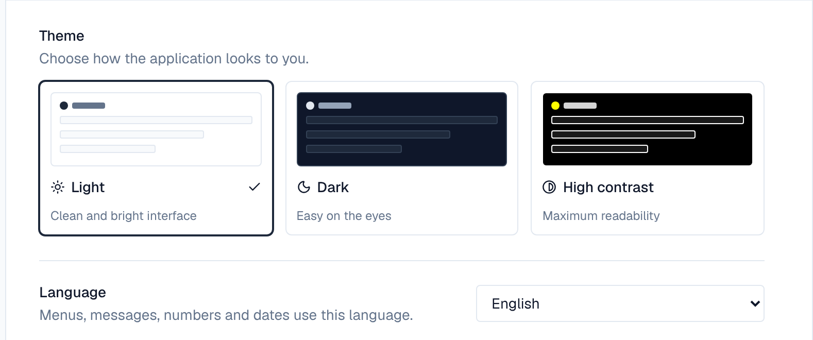
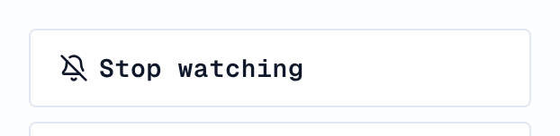
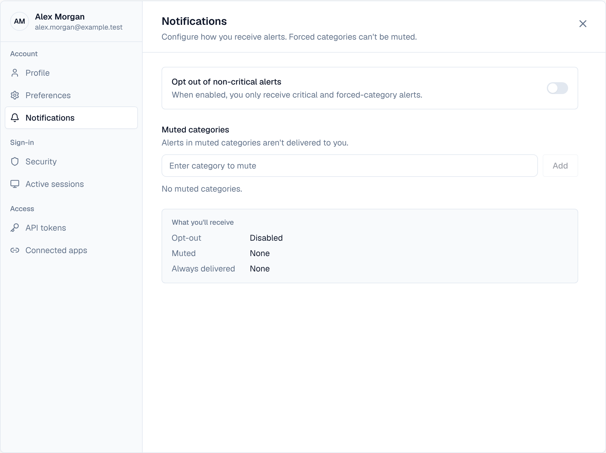

1. Your profile settings
Open your profile settings from the profile menu (your picture or initials, top right) with Edit Profile. The sections are in three groups: Account (Profile, Preferences, Notifications), Sign-in (Security, Active sessions) and Access (API tokens, Connected apps, and sections that installed plugins add). On a phone the sections are a row of tabs above the content.
- Profile: change your avatar (a preset picture, or upload JPEG, PNG or WebP up to 2 MB) and see your name, email and role. An administrator changes your name and email.
- Preferences: the theme and language (below).
- Notifications: which alerts you get (below).
- Security: change your password, and Download my data.
- Active sessions: where you are signed in; sign out one session or all the others.
- API tokens: tokens for scripts and integrations. See API tokens.
- Connected apps: applications you allowed to act for you. See OAuth applications.
2. Theme and language
Under Preferences, pick Light, Dark or High contrast; each card previews that theme. Language sets the language of menus, messages, numbers and dates: English or German (Deutsch). Both are saved for your account and follow you to other devices. The profile menu has the same two choices as a shortcut.

3. Watching a page
Watch on a page sends you an alert each time a new version of it is published. Stop watching ends that. You watch a page automatically when you create it or publish a version of it; once you stop watching, the Wiki doesn't sign you up again.

- A version published as a Minor change doesn't alert watchers.
- You aren't alerted about your own publish.
- A new comment on a page you watch alerts you too. See Comments.
- You are only alerted while you can still read the page.
Watching a whole space or a label isn't available yet: watch the pages you care about.
4. Mentions
Editors can mention someone in a page by typing @ and part of their name, then picking them from the list. When the page is next published, each person it mentions gets an alert, once per page: being mentioned again in a later version of the same page doesn't alert them again. Mentions in comments alert the person when the comment is posted.
- The list offers active people of the space's organization, matched on their name (never their email). In a private space, only the space's members can be mentioned.
- Mentioning needs permission to see people's profiles; editors without it don't get the list.
- Readers who may not see people's profiles, and visitors who aren't signed in, see the name only.
5. Choosing which alerts you get
Notifications in your profile settings (also the settings icon in the bell panel, and Preferences on the notifications page) controls what reaches you:
- Opt out of non-critical alerts stops everything but critical alerts and the categories your administrator forces on everyone.
- Muted categories stop one kind of alert. Forced categories can't be muted and show a lock icon.
- A summary below says what you'll receive. Changes wait in a bar at the bottom until you Save preferences or Discard them.

The Wiki's alerts arrive in the bell and on the notifications page. Email and digest delivery of page alerts isn't available yet. To stop alerts about one page, use Stop watching on it.